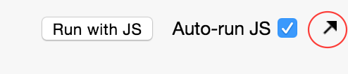

Troubleshooting Melhorar esta página
Below are some common issues you may encounter when using the Inspector, along with the necessary steps to solve them. If your issue is not listed below, please submit an issue to the Inspector's GitHub repo.
Ember Application Not Detected
If the Inspector cannot detect an Ember application, you will see the following message:
Some of the reasons this may happen:
- This is not an Ember application
- You are using an old Ember version ( < 1.0 ).
- You are using a protocol other than http or https. For file:// protocol, follow these steps.
- The Ember application is inside a sandboxed iframe with no url (if you are using JS Bin, follow these steps.
Using the Inspector with JS Bin
Due to the way JS Bin uses iframes, the Inspector doesn't work with edit mode. To use the Inspector with JS Bin, switch to the "live preview" mode by clicking on the arrow circled below.

Application is not Detected Without Reload
If you always have to reload your application after you open the Inspector, that may mean
the application's booted state is corrupt. This happens if you call advanceReadiness or
deferReadiness after the application has already booted.
Data Adapter Not Detected
When you click on the Data tab, and see this message:
It means that the data persistence library you're using does not support the Inspector. If you are the library's author, see this section on how to add Inspector support to your library.
Promises Not Detected
You click on the Promises tab, and see this message:
This happens if you are using a version of Ember < 1.3.
Missing Promises
If the Promises tab is working, but there are Promises you can't find,
it's probably because these Promises were created before the
Inspector was activated. To detect Promises the moment the app boots, click on the Reload button below:
Inspector Version Old on Firefox
Firefox addons need to go through a review process with each update, so the Inspector is usually one version behind.
Unfortunately we don't have control over the Firefox review process, so if you need the latest Inspector version, download and install it manually from GitHub.